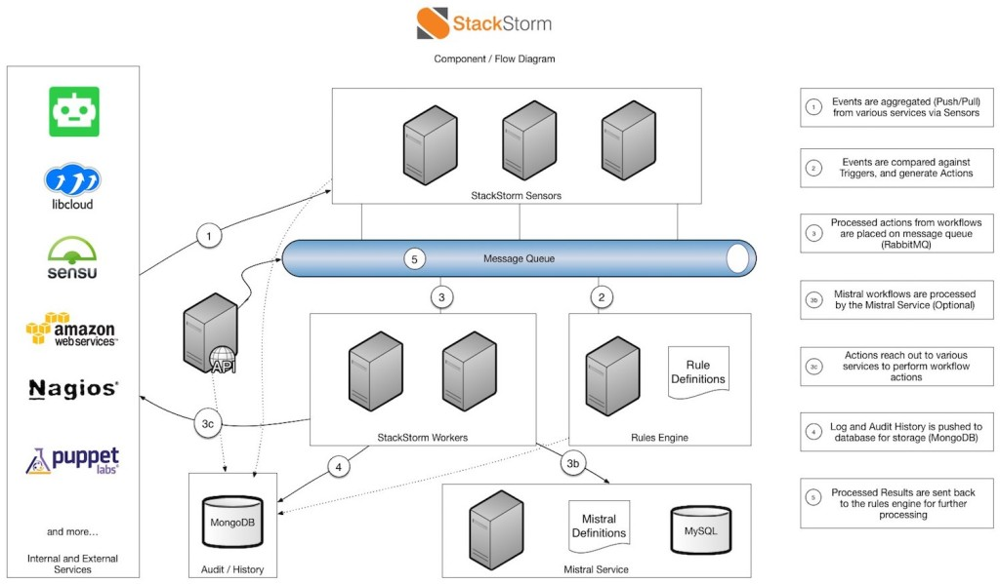
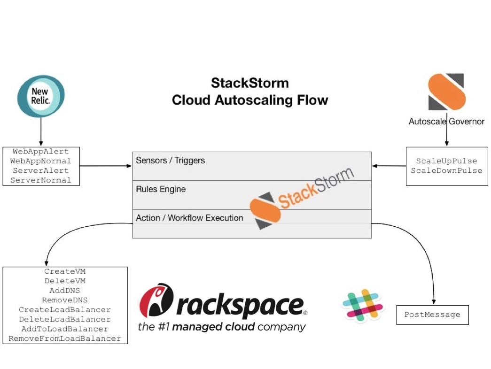

March 30, 2015
by James Fryman
This article originally appeared on New Relic’s blog.
I am hard pressed to think of a challenge in operations today as complex as Infrastructure Autoscaling. In this single use case several unique subsystems must all play in concert to facilitate the delivery of computing resources with little or no human involvement. Done right, it is difficult to deny the magic of a workflow coming together to provide truly elastic infrastructure.
But the challenges in a real-world implementation of an autoscaling infrastructure are many, with one of the chief issues being a lack of flexibility. Many organizations have large investments in existing processes and technologies. When an autoscaling solution doesn’t allow for integration with a specific monitoring service, or users want additional control on how machines are managed, the end result is often to avoid the integration altogether or build custom code.
All this being said, when StackStorm was approached by the Rackspace DevOpsorganization to help solve for custom workflows, we jumped at the opportunity! Who doesn’t love a good challenge? In the course of about a week, we were able to create a fully working solution composed of Rackspace Cloud infrastructure, New Relic alerting, and, of course, StackStorm. What I hope to share with you today is just how easy complex tasks like workflow automation can be tailored to your specific flavor of infrastructure.
But first, let’s start with a little background: what StackStorm is and how the autoscaling process works.
StackStorm is a platform for integration and automation across services and tools. It’s designed to tie together your existing infrastructure and application environment so you can more easily automate that environment–with a particular focus on taking actions in response to events. StackStorm employs a concept of Sensors, which act as the entry point into the system. These sensors can be either pull or pushed based. Sensors in turn emit Triggers into our system, which are matched against our rules engine. These rules evaluate the execution of a single action, or multiple actions chained together in a workflow.

The StackStorm service uses a modular architecture. It comprises loosely coupled service components that communicate over the message bus, and scales horizontally to deliver automation at scale. StackStorm has a full REST API, CLI client for admins and users to operate it locally or remotely, and Python client bindings for developers’ convenience. (Learn more at http://docs.stackstorm.com/overview.html.)
There are several reasons to leverage an autoscaling cloud. One common use case is to add additional capacity to cope with a surge in demand or failure of existing resources. This is where we set our sights: How could StackStorm help facilitate the management of additional capacity when needed? We broke down the problem into the five phases:
Phase 0: Setting up an autoscaling group
Phase 1: Systems failing
Phase 2: Monitor the situation
Phase 3: Recover and stand down
Phase 4: Decommission an autoscaling group
In Phase 1, StackStorm would receive an event from a monitoring system, in this case New Relic. The monitoring system should tell us what application or infrastructure component is impacted, and how it is impacted—is it a warning alert in that the system has some time to respond before things go poorly, or are we already in a critical scenario where immediate action is needed? From Phase 1, systems are provisioned in order to alleviate pressure. This phase may also include escalation policies to let folks know of the situation.
Phase 2 deals with attempting to quantify the recovery state of an application. A critical incident may still be underway, but at this point additional resources are allocated to manage the load. During this phase, StackStorm needs to stay on top of things to make sure that if another tipping point is reached, it is ready to provide additional relief as necessary. Likewise, StackStorm needs to know when an event has ceased, and when resources can start spinning down.
Phase 3 is all about cleanup. An event is over, and now it’s time to return to normal. StackStorm needs to understand what normal means, and how to safely get there with minimal disruption for users.
We started our exploration detailing how we imagined the autoscaling workflow would be executed, and added creation and deletion actions on both ends of the process to ensure completeness. (Look here for more details.)
The key takeaway is that we were able to abstractly discuss the logic of how we expected the workflow to run without ever discussing tooling. This helped us to better understand what data from our tools we might need while integrating with different parts of the stack.
At an abstract level, the workflow seems easy, but the devil is in the details. We needed to break down all the individual components used to create a new system ready to process requests and start building integrations for them. Considering the full life cycle of a machine, we needed to
So let’s walk through how it all works:

To begin, we have a set of actions responsible for Phase 0: Setting up a new autoscaling group. This process is responsible for creating a new association within StackStorm, and deciding what flavor/size of cloud compute nodes will be set up. These values are all stored in StackStorm’s internal datastore.
Then, we wait. At some point, our application will fail. To save time, we developed a fun new application that simulates App and Server errors. New Relic tracks four events that we’re going to keep an eye out for: looking to see if an application or server has entered a critical state, and the corresponding recovery event. These events are sent to StackStorm via New Relic’s WebHook API, processed as Triggers, and then matched to rules. (Click here for more information.)
Depending on the received event (Alert/Recovery), things go into action. In the event of an alert, StackStorm will set the alert state for the given application to ‘Active.’ (This is used with the governor—more on that in a moment.) Then StackStorm kicks off the specified number of new nodes to our Auto Scale group. This workflow is responsible for adding additional nodes, making sure they have been provisioned with Chef, and also adding the nodes to Rackspace DNS and the Rackspace Load Balancer. Finally, as all of these events fire, we send out ChatOps notifications to Slack to inform the admins of what is happening. (This workflow is articulated here in more detail.)
All the while, another internal sensor that we call a TimerSensor is polling every 30 seconds. Each interval, the governor looks at the state of all AutoScale group alert statuses to decide whether or not additional nodes need to be created and added to the Auto Scale group. It does this by looking for any Auto Scale groups that are in alert state, and attempts to add additional capacity if the right conditions are met. The first pass uses a sort of blunt sword throttling: The governor evaluates the time since the last scale event and responds accordingly. The same logic also runs in reverse, but at a much slower rate.
Finally, at some point, things return to normal and New Relic sends a recovery Webhook. At this point, the ASG is marked as stable, and the governor begins to slowly scale things back down until everything has returned to normal.
Perhaps the best part is that everything discussed here is available as code. You can download all of the code used in this example here, including provisioning of a StackStorm server, and create your own autoscaling cloud. You can also look at any of the integrations created as part of this exploration:
Download the repository, spin up your own StackStorm server—follow the quick start instructions and get a taste of our automation in less than 30 minutes—and get going today. You can also learn more about Cloud Agnostic Autoscaling with StackStorm in the demo video below.
Finally, this example is what I like to call a ‘First Hammer’—a flexible working solution that can provide value today and can continue to be iterated upon as additional use cases arise. Each integration point can be adjusted as your company grows. Need to change the algorithm for autoscaling? Add it to the workflow. Need to add or change cloud providers? You can do that too. As it turns out, there is no such thing as one-size-fits-all infrastructure, and rightly so. Combining StackStorm with your current toolset can be done quickly and easily, just as we’ve shown here with New Relic and Rackspace DevOps.